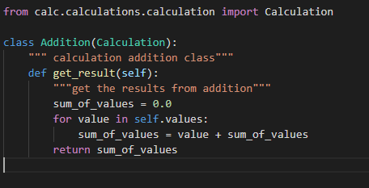

SOLID Object Orientied Design
S - Single Responsibility Principle states a class should have only one reason to change meaning a class should have only one job. In our calculator,
the responsibility of creating classes were left to calculations.py while the actual logic or implementation is handled in each of there respective files (e.g. division.py )
calculator.py contains contains methods to calculate and contains no other information.

Note: Here the addition class job is to just to calculate addition logic but in calculations.py they were added to histroy without additional logic.
O - Open Closed Principle states "A class should be open for extension, but closed for modifications". What this means we should be able to extend a class or add on to a class without modifying the class itself.
For example, in calculations.py we use Multiplication class from calc.calculations.multiplication import Multiplication without changing the logic being done in multiplication.py.
L - Liskov Substitution Principle states derived classes must be substitutable for there base classes. You should be able to change an instance using sub-type and your own code still should work.
I - Intergace Segregation Principle states to make it that a client isn't being forced to implement an interface neither force to depend on methonds they do not use. More interfaces are better than too little. Allows to split the responsibility of a class without violating Liskov's principle.
D - Dependency Inversion Principle states to depend on abstractions and not concrete instances. states that the high-level module must not depend on the low-level module, but they should depend on abstraction.
Source: https://towardsdatascience.com/solid-coding-in-python-1281392a6a94